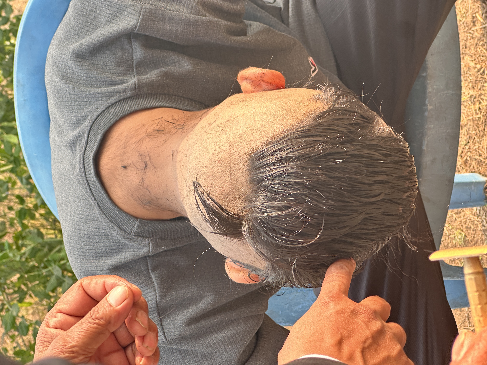

About Our App
The Leave Management System is a user-friendly platform designed to streamline the process of applying for and approving leaves within an organization. It ensures efficient communication between employees and supervisors, tracks leave balances, and maintains a transparent approval process.
Meet Our Developers
Elis Kandel
Backend Developer • Django & REST APIs • Testing & Bug Fixing
Sagar Kandel
Frontend Developer • JavaScript & UI Design

Pawan Poudel
Full Stack Developer • DevOps & Integration
Bibek Poudel
Frontend Developer • JavaScript & UI Design